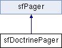

Documentation des fonctions membres
Returns a query for counting the total results.
- Renvoie:
- Doctrine_Query
| getResults |
( |
$ |
hydrationMode = null |
) |
|
Get all the results for the pager instance
- Paramètres:
-
| mixed | $hydrationMode A hydration mode identifier |
- Renvoie:
- Doctrine_Collection|array
Get the name of the table method used to retrieve the query object for the pager
- Renvoie:
- string $tableMethodName
| initializeIterator |
( |
|
) |
[protected] |
| retrieveObject |
( |
$ |
offset |
) |
[protected] |
Retrieve the object for a certain offset
- Paramètres:
-
- Renvoie:
- Doctrine_Record
Réimplémentée à partir de sfPager.
Serialize the pager object
- Renvoie:
- string $serialized
Set query object for the pager
- Paramètres:
-
| setTableMethod |
( |
$ |
tableMethodName |
) |
|
Set the name of the table method used to retrieve the query object for the pager
- Paramètres:
-
- Renvoie:
- void
| unserialize |
( |
$ |
serialized |
) |
|
Unserialize a pager object
- Paramètres:
-
La documentation de cette classe a été générée à partir du fichier suivant :
- /var/www/els/lib/vendor/symfony/lib/plugins/sfDoctrinePlugin/lib/pager/sfDoctrinePager.class.php
 1.7.1
1.7.1